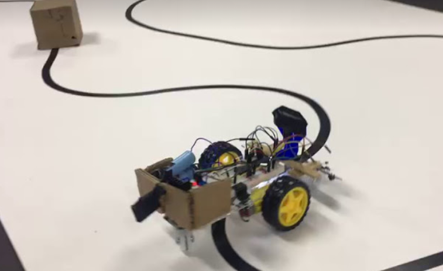

OBJECTIVE
The goal of this project was to build an autonomous line follower vehicle that was also capable of detection of obstacles. Once an obstacle was detected, the vehicle had to find a way around it and return to the path made by the line.
TECHNICAL DETAILS

- PIC microcontroller
- MPLAB IDE
- C
- Infrared Sensors
- Ultrasonic Sensors
- Gearmotors
- Acrylic structure
This project was made using: